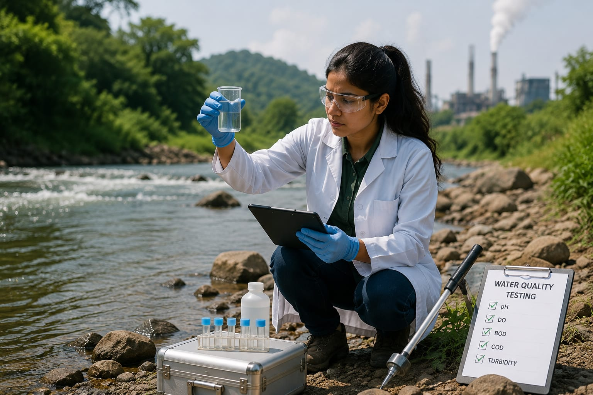

- Imagine a new project is planned (eg.,a shopping mall or factory).
- Before construction begins, environmental scientists study the land, water, air, plants and animals in that area.
- They check whether the project could harm the environment and suggest ways to reduce the damage.
- 👉 In simple words: Environmental Scientists study nature and help protect the environment while supporting development.
Environmental Scientist
🧑🎨 What Do They Do?

🎓 How to Become an Environmental Scientist
The courses to pursue this career are given below :
These Environmental Science programs help students learn about nature, pollution control, climate change, wildlife, water conservation, and environmental protection.
B.Sc. / B.Sc. (Hons.) in Environmental Science
Duration: 3 – 4 Years
Eligibility: 10+2 Pass in Science Stream with Physics, Chemistry, and Biology/Mathematics (PCB/PCM)
Entrance Exam: CUET UG / State University Entrance Tests / Board Merit-Based
Integrated B.Sc. + M.Sc. in Environmental Science
Duration: 5 Years
Eligibility: 10+2 Pass in Science Stream (PCB/PCM)
Entrance Exam: CUET UG / National-Level Central University Tests
B.Sc. in Ecology / Earth Sciences
Duration: 3 Years
Eligibility: 10+2 Pass in Science Stream
Entrance Exam: University Merit Lists / CUET UG
Note: Environmental Science programs include subjects like ecology, climate change, pollution control, wildlife conservation, geography, environmental chemistry, and sustainability.
These postgraduate Environmental Science programs help students specialize in climate change, pollution control, ecology, conservation, and environmental research.
M.Sc. in Environmental Science
Duration: 2 Years
Eligibility: B.Sc. in Environmental Science, Life Sciences, Chemistry, Botany, Zoology, Geography, or related fields
Entrance Exam: CUET PG / IIT-JAM / State PGCET
M.Sc. in Environmental Toxicology / Climate Change Studies
Duration: 2 Years
Eligibility: Bachelor’s Degree in Science or related biological/physical sciences
Entrance Exam: University Entrance Tests / CUET PG
Post Graduate Diploma in Environmental Law and Management
Duration: 1 Year
Eligibility: Graduation in Science, Law, or related streams
Entrance Exam: Merit-Based Admission / Profile-Based Selection
Note: Postgraduate Environmental Science programs include subjects like environmental management, climate science, toxicology, sustainability, ecology, conservation, and pollution monitoring.
Note:
(Age limits, marks, and admission process may vary depending on the college or state.
Below are some colleges that offer these courses.
These courses are available in many colleges and universities across India. You can choose colleges based on your location, budget, and entrance exams.)
🏛️ Colleges offering these courses in India
(Tap on a college to view details)
STEP 1
Imagine you are working as an Environmental Scientist.
STEP 2
You visit rivers, forests, factories, and cities to study environmental problems.
STEP 3
You collect samples of water, soil, and air for testing and research.
STEP 4
You study pollution levels and find ways to protect nature and people.
STEP 5
You prepare reports and suggest eco-friendly solutions to companies and governments.
STEP 6
If protecting nature and solving environmental problems excite you, this career may suit you.
Where do Environmental Scientists work? (Job Roles + Growth)
Environmental Scientist work in : Environmental research centers, Laboratories, Government organisations, Environmental consulting firms, Conservation organisations, Industries, Universities and Wildlife and forestry organisations.
🟢 Beginner Roles
Environmental Field Technician
(B.Sc. in Environmental Science)
Collects water, soil, and air samples to test pollution levels.
EHS Officer
(B.Sc. / M.Sc. in Environmental Science)
Checks factories and workplaces for safety and environmental rules.
Conservation Assistant
(B.Sc. in Ecology / Environmental Science)
Helps protect forests, wildlife habitats, and ecosystems.
🔵 Mid-Level Roles
Environmental Consultant
(M.Sc. in Environmental Science)
Advises companies on pollution control and environmental laws.
Sustainability Analyst
(M.Sc. / PG Diploma in Environmental Science)
Studies energy and water use to reduce carbon footprint.
Environmental Toxicologist
(M.Sc. in Environmental Toxicology)
Studies how harmful chemicals affect living organisms.
🟣 Advanced Roles
Chief Environmental Scientist
(Ph.D. in Environmental Science / Ecology)
Leads major environmental research and restoration projects.
Environmental Impact Assessment Lead
(M.Sc. / Ph.D. + Industrial Experience)
Evaluates whether projects may damage the environment.
Climate Policy Advisor
(Ph.D. / M.Sc. in Climate Change Studies)
Helps governments create climate and environmental policies.
Global Opportunities for Environmental Scientists
Environmental Scientists can work in climate research, conservation, pollution control, and sustainability projects around the world.
Many countries hire environmental experts to protect nature and fight climate change.
International Environmental Organizations
Work on global projects related to climate change, clean water, and pollution control.
Wildlife & Conservation Groups
Help protect forests, oceans, wildlife, and natural ecosystems.
Global Industries & Companies
Help companies reduce pollution and follow environmental safety rules.
International Research Laboratories
Study pollution, climate change, renewable energy, and environmental health.
Climate Change Projects
Work with scientists and governments to create solutions for global warming.
Universities & Research Institutes Abroad
Work as researchers, professors, or environmental experts in universities abroad.
(Click Yes or No for each question)
1. Do you feel worried when you see pollution in rivers, roads, or public places?
2. Are you interested in learning how climate change affects nature and people?
3. Do you like learning about forests, wildlife, rivers, and nature?
4. Imagine you are working as an Environmental scientist. A company wants to build a new factory near to a forest area. You study the plants, animals, water and soil in that area and check how the factory could affect them. You then give the company advice on how to reduce the damage. Would you be interested in doing this?
5. Imagine a factory is polluting a river in a village. You go there and study the river and surrounding area to find out what is causing the pollution.You collect information and samples, and helps find ways to reduce the pollution. Because of your work, the pollution is reduced and the river becomes safer for people and animals. Does this work excite you?